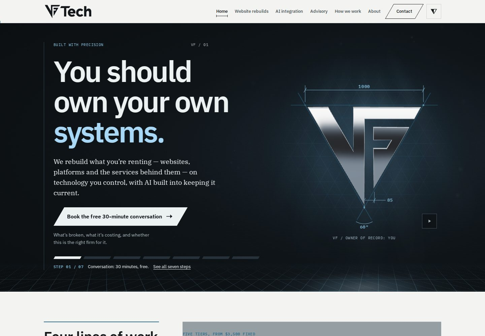
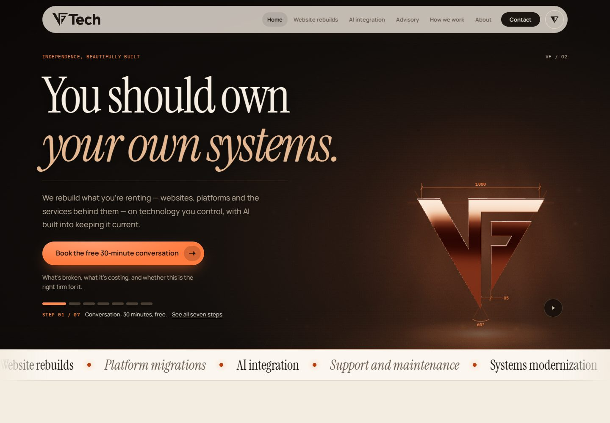
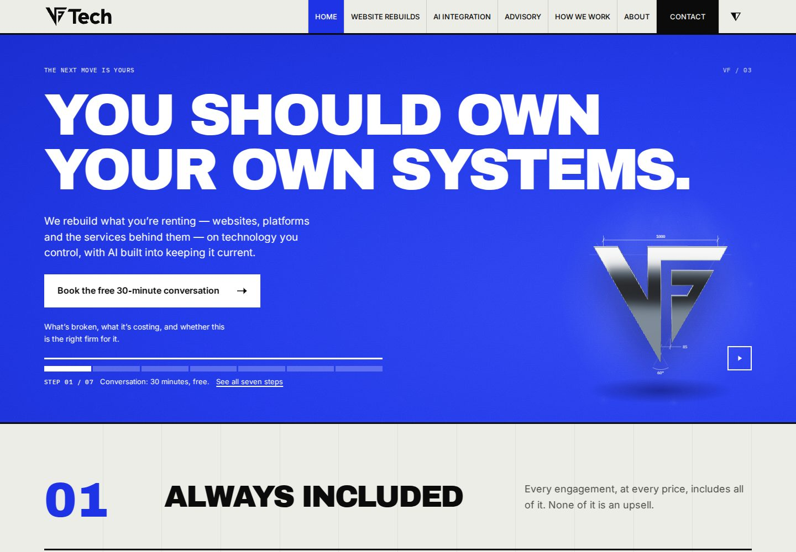
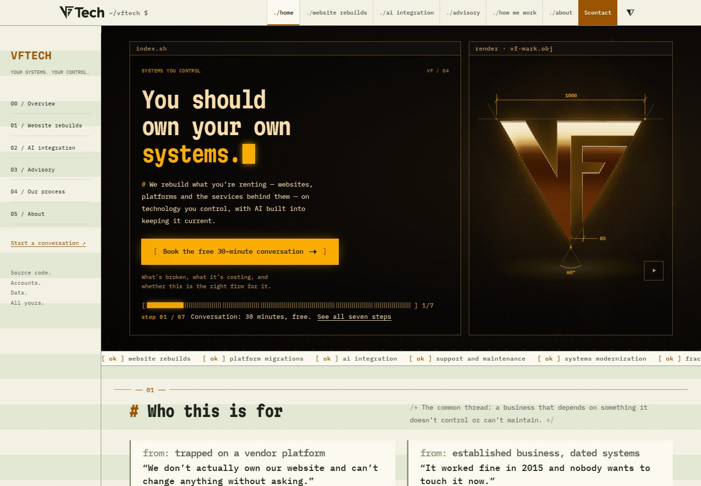
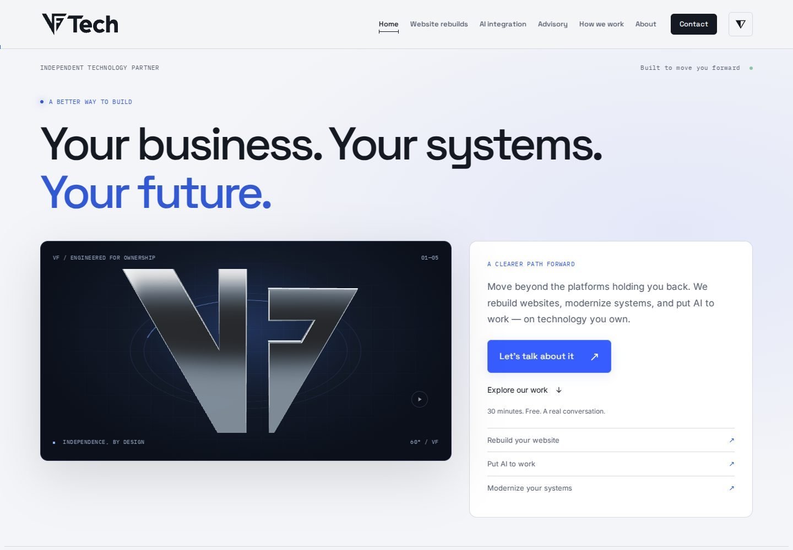
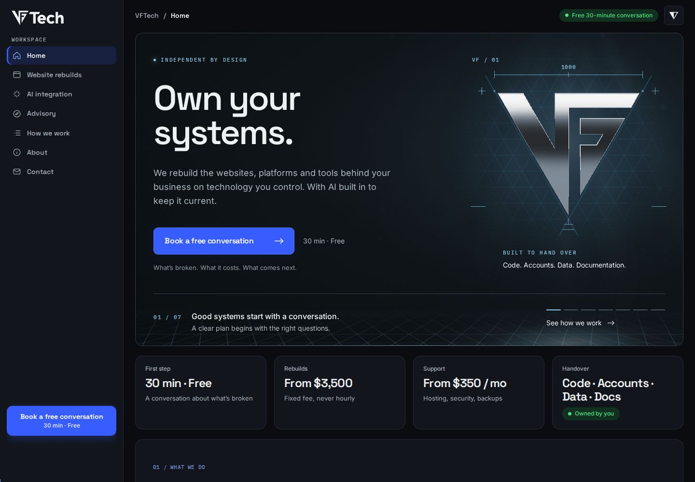
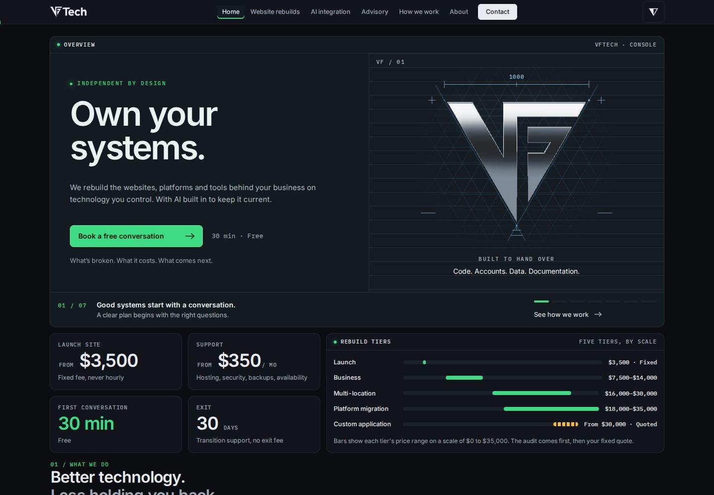
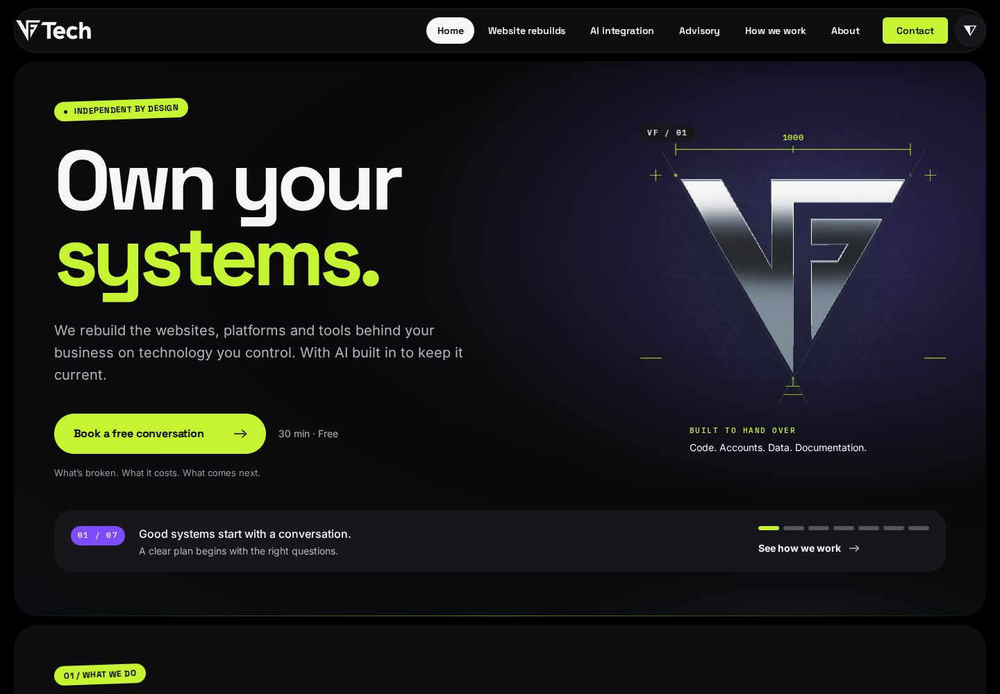
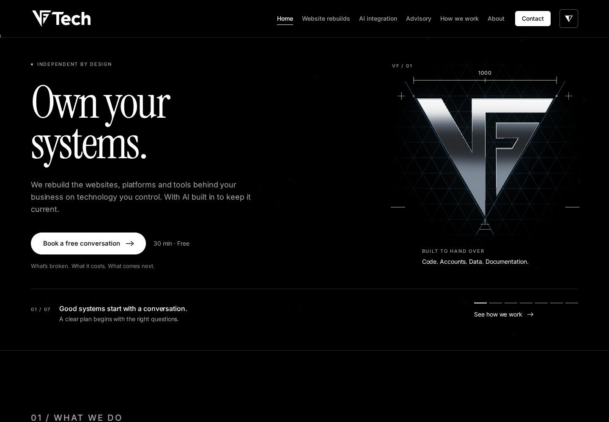

Option 01
Drafting
Precise sans headings, a readable serif, and a measured split hero. A service ledger gives the page a deliberate, structured rhythm.
IBM Plex Sans / IBM Plex Serif / IBM Plex Mono
Explore DraftingVFTECH / DESIGN DIRECTIONS
Start with the type. Then explore the shape of each page. Five studio directions and five in the style of modern SaaS products, all with the same focus on systems you own.

Option 01
Precise sans headings, a readable serif, and a measured split hero. A service ledger gives the page a deliberate, structured rhythm.
IBM Plex Sans / IBM Plex Serif / IBM Plex Mono
Explore Drafting↗
Option 02
Expressive editorial serif with an italic accent. A magazine cover composition gives the headline, story, and chrome object room to breathe.
Instrument Serif / Manrope / IBM Plex Mono
Explore Kiln↗
Option 03
Heavy poster lettering that makes ownership the main message. Wide numbered sections and a bold service grid carry the same confidence through the page.
Archivo Black / Inter / IBM Plex Mono
Explore Signal↗
Option 04
A technical monospace hierarchy inside a console workspace. The desktop contents rail and framed modules make the page feel like a system you control.
Martian Mono / IBM Plex Mono
Explore Phosphor↗
Option 05
Geometric display type and clear reading text. A broad headline leads into an asymmetric object and action panel, followed by a bento of services.
Space Grotesk / Inter / IBM Plex Mono
Explore Orbit↗Option 06
Midnight navy with soft glow, a centered headline and a product-style frame around the mark. Services sit in a glass bento grid.
Inter / IBM Plex Mono
Explore Lumen↗
Option 07
An app shell: a fixed sidebar, a top bar with breadcrumb, stat cards from the real prices, and tiers laid out as table rows.
Space Grotesk / Inter / IBM Plex Mono
Explore Ledger↗
Option 08
A dense dark usage console. Metric cards, range bars for the five rebuild tiers, and one green accent on charcoal panels.
Inter / IBM Plex Mono
Explore Console↗
Option 09
Black rounded panels with vivid purple and lime, pill navigation, oversized numerals and sticker-like badges.
Space Grotesk / Inter / IBM Plex Mono
Explore Pulse↗
Option 10
Strictly black and white editorial. An Instrument Serif display, hairline rules, numbered sections and inverted bands.
Instrument Serif / Inter
Explore Mono↗